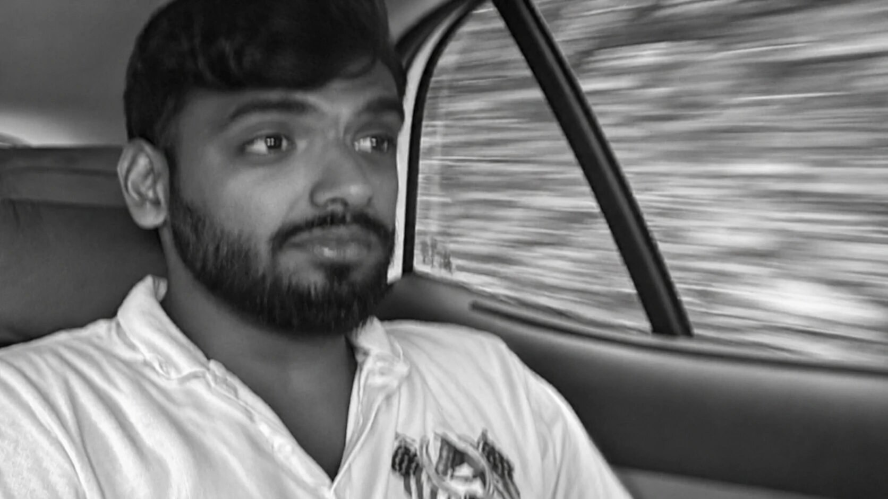
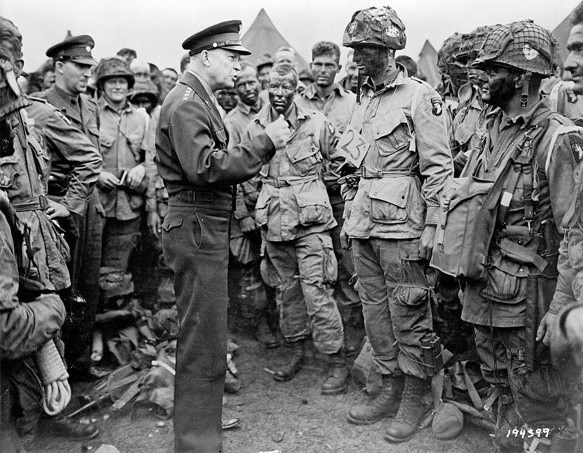
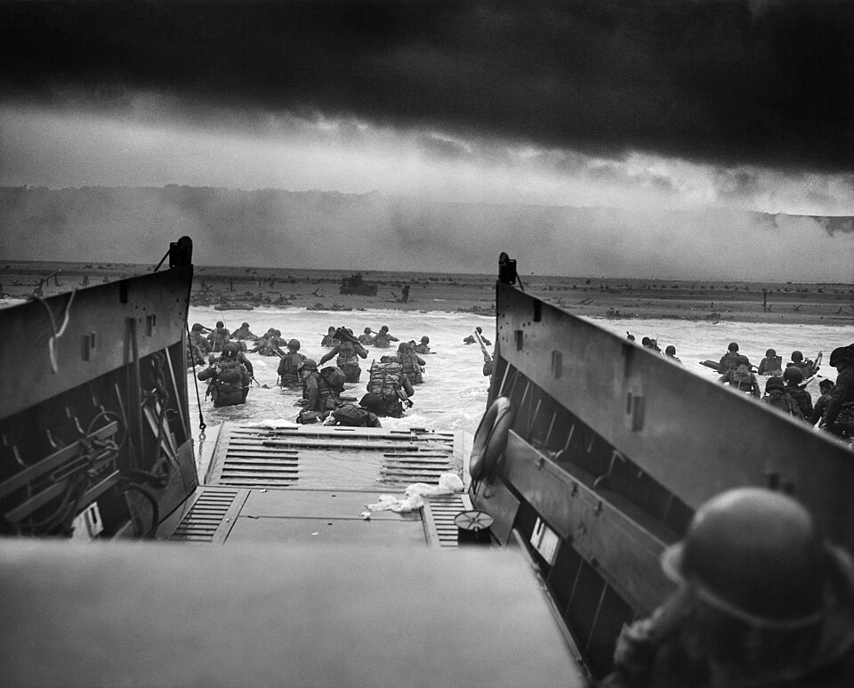
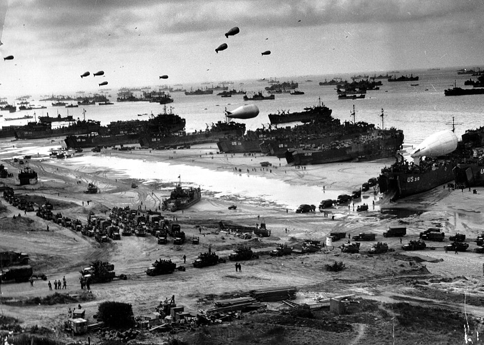
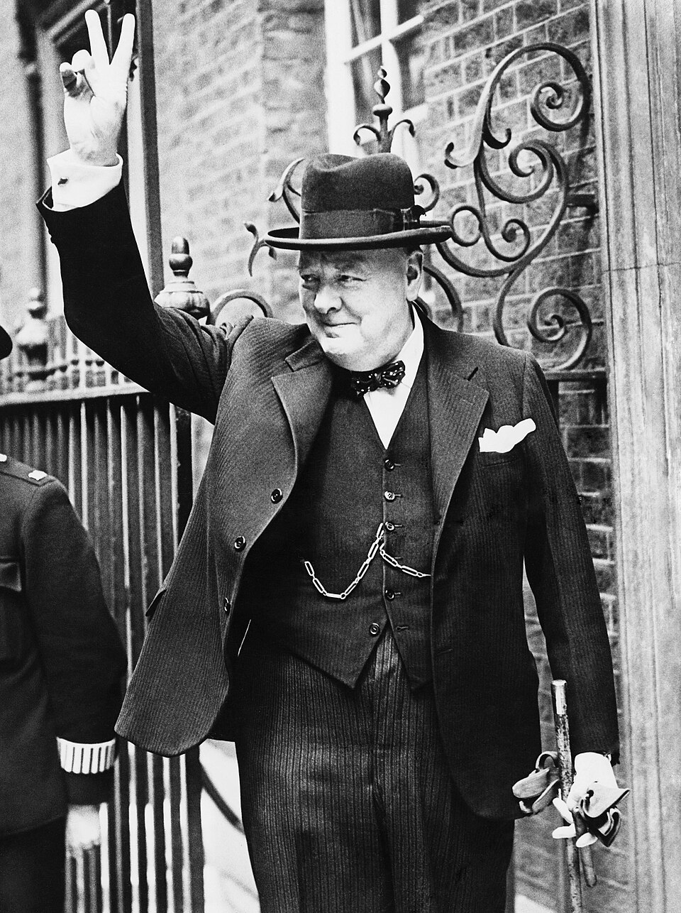
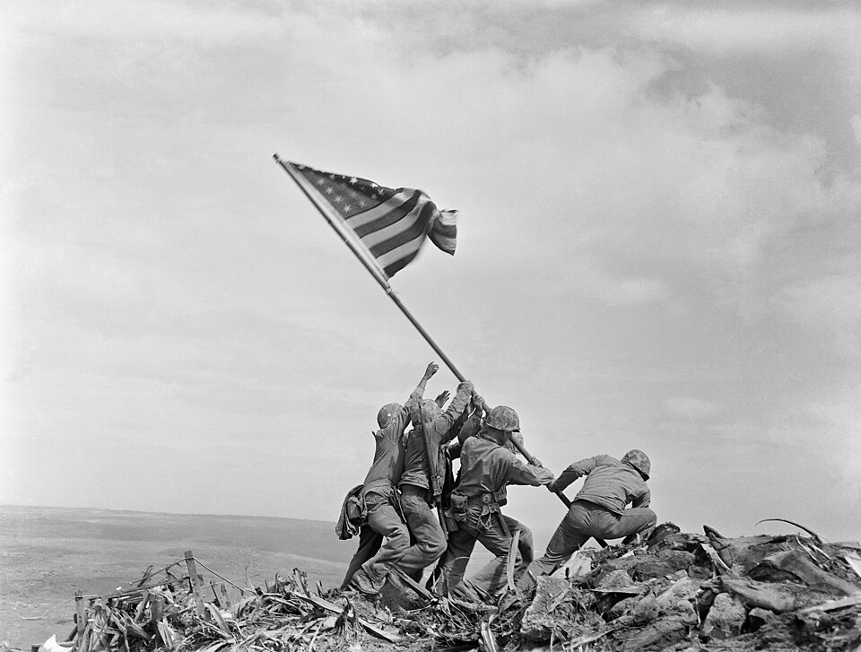

How Gounders Changed WW2 Forever
a totally true* history, typed up by me, on my computer
*not true. this is a parody. please do not cite this in your exam.
Hello and welcome. Most history books will tell you that on 6 June 1944 the Allies landed on the beaches of Normandy and began the liberation of Western Europe. Most history books are, sadly, missing one small detail. The Gounders were there. And they were in charge.
This page is my attempt to set the record straight. Grab a filter coffee. It's a long one.
Chapter 1: The Man in the White Shirt

The only known photograph of Supreme Commander Vishist Ram, taken in the back of a staff car somewhere in southern England, May 1944. He is looking at France. He is not impressed with France.
By 1944 the war had dragged on for nearly five years. The generals in London had a plan, a very big plan, with thousands of ships and a codename and everything. There was just one problem: nobody could agree on a date, and every meeting ended with someone asking for more tea.
Enter Vishist Ram, leader of the Gounders, a gang of extremely punctual men from the Kongu region who had arrived in England "just to see what's happening." Within a week Vishist had taken over the planning room, reorganised the maps by district, and told everybody to stop over-thinking it.
"Machan, you have been planning for two years. The beach is not going to plan itself. We go Tuesday."
— Vishist Ram, to the Allied High Command
The generals, who had never been called "machan" before, were too stunned to argue.

5 June 1944. A visiting American general asks the paratroopers if they have heard of the Gounders. They have. Everyone has. (Photo: US Army, public domain)
Chapter 2: Operation Kongu
The invasion was renamed Operation Kongu. The Gounders made only three changes to the original plan:
- Every landing craft would carry a steel tiffin carrier. Morale is important.
- The weather was declared "fine, only a small drizzle, nothing will happen."
- Instead of five beaches, there would be five family groups, each led by an uncle who knew a guy.

"Into the Jaws of Death." The Gounder 1st Division wades ashore. Several men are shouting at the boat driver for parking too far from the beach. (Photo: Robert F. Sargent, US Coast Guard, public domain)
The Germans on the cliffs had prepared for everything. Tanks, paratroopers, a fake army in Kent. What they had not prepared for was several thousand men walking up the beach asking each other loudly whose land this was originally and whether it was for sale.
"They did not attack us. They began negotiating for the bunker. By noon we had sold it to them at a very reasonable price."
— a confused German officer, probably
Chapter 3: The Beachhead

The beachhead, a few days later. Supplies pour ashore. Vishist insisted every truck be properly unloaded "in a systematic manner, not like a wedding buffet." (Photo: US Army, public domain)
Within a week the beachhead was secure. Within two weeks the Gounders had opened a textile shop in Bayeux. Within a month Vishist Ram had personally driven across France in the back of a staff car, staring out of the window with the exact expression in the photo above, which historians now call "The Look."
It is said that whenever a German unit saw The Look, they simply surrendered and asked for directions home.

Back in London, Churchill hears that Operation Kongu is going well. Asked by reporters what the V stands for, he replies: "Vishist." (Photo: Imperial War Museum, public domain)
Chapter 4: Victory (and Lunch)
When the war in Europe finally ended in May 1945, the Allied leaders gathered to sign the papers. Vishist Ram was invited to the ceremony. He did not go. He said it was during lunch.
Word of the Gounders reached the Pacific too. Before long, a small group of them had climbed a rather large hill on a rather small island and put up a flag. Nobody is entirely sure whose flag it was. Some say it said "Ram & Sons, Erode."

February 1945. "Pull a little more to the left, machan." (Photo: Joe Rosenthal, Associated Press, public domain)
Epilogue
After the war Vishist Ram returned home quietly. He never wrote a memoir. He never gave an interview. When asked about the war, he would only say: "It was okay. The food was not good."
And that, friends, is how the Gounders changed WW2 forever.
This page is a PARODY. Nothing here happened. The real D-Day was fought and won by real people at real cost, and you should read about them.
Historical photos are public domain, via Wikimedia Commons.
 made with notepad & love · last updated: whenever · back to top
made with notepad & love · last updated: whenever · back to top
[wiby.me] [webring ← prev | next →]